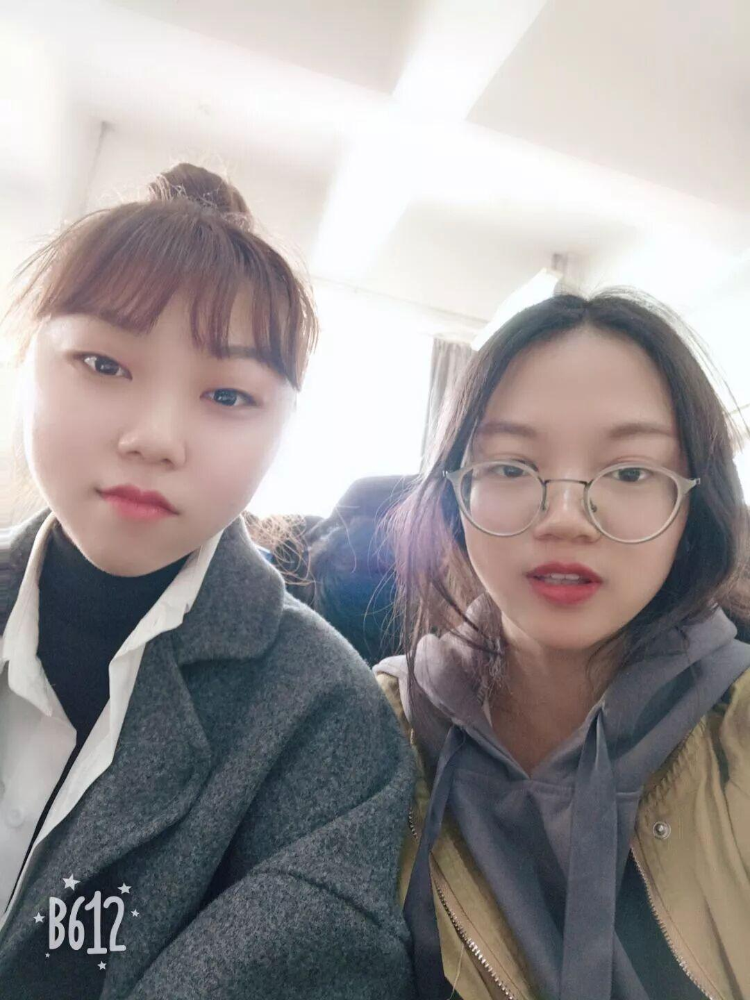
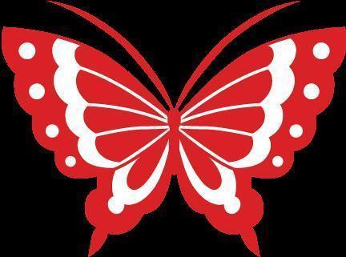
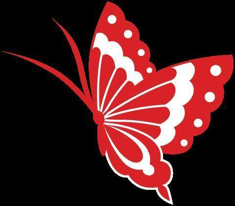

女生节快乐
女生节，战队小姐姐来战
走过路过千万不要错过啊，今天战队小姐姐们要出动了，跟大家分享自己在战队和专业之间的趣事，想要知道吗，快，跟紧小编的步伐。
|



一直以为学工科会很帅气，电脑在手，天下我有。当然事实证明是大片看多了，身边更多的是油光满面的理工男，叼一根小烟头，抓把瓜子坐在电脑前，老牛拉车一样的代码速度，电视剧里都是骗人的。当然啦，他们也凭着丰富的软件硬件知识赢得了我的崇拜。顺便吐槽一下各种编程界面，红红绿绿，简直不要太丑！
由于平时都是上大班课，班里的男生认得不是很全，记得有一次期末考试，我班一位男同学忘记带校园卡，监考老师随手一指我，问我他叫什么名字（以证明他是我们班的），我想了半天，没想起来，好尴尬的。
学这个专业嘛，收获了一堆专业知识和阳刚之气！
亲戚朋友听说我的专业的时候都是似懂非懂，其实我也不太懂我们学什么。知道在做机器人比赛，那当然是优秀啊！去年比赛我妈妈还一直在看比赛直播呢！
有一点后悔，因为找工作性别歧视比较严重吧。
当然是机械的男生，连组装和画图都那么认真仔细，一定是很细心的人。
去年本科只有我一个女生，研究生学姐不和我们在一个实验室，好孤单的，还好今年有了学妹们的加入！去年出发前一天，队员们晚上在实验室包宿调试，虽然我帮不上什么忙，但是大家要一起奋斗嘛，于是陪着他们一起。说来怪不好意思的，唯一一张床让给了我。


编辑：扈竞